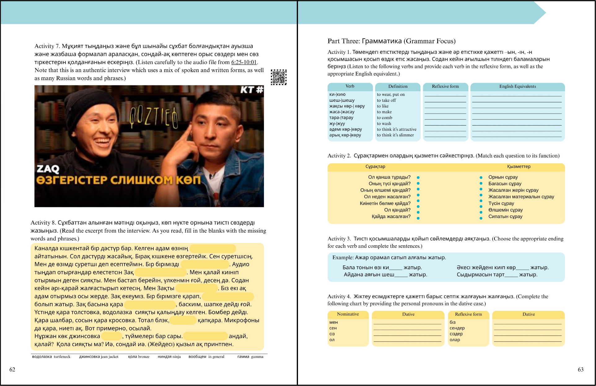

Data Presentation for Research Project in Nanotechnology
Exploring visual design, cultural representation, and interactive learning through the development of a Kazakh language textbook.
Student Symposium Poster at Los Alamos National Laboratory
I designed this poster to describe my internship project, which focused on tracking the trajectories of quantum-dot-labeled antigens in physiological solution to predict antibody–antigen dissociation dynamics. The poster highlights my Python-based graphical representation of three-dimensional trajectories and my calculations of antigen diffusivities using the Stokes–Einstein equation. The design emphasizes clarity and accessibility while accurately conveying complex kinetic data. This work has been submitted for peer review and is expected to be published in the Review of Scientific Instruments in 2026.

Kazakh Textbook Project Sample
Work in ProgressThese pages showcase my design work for a Kazakh language textbook, where I focused on visual clarity, engagement, and usability. The blue header shape is designed to visually cross page boundaries when facing pages align, creating cohesion across the spread.
Interactive elements are embedded throughout, including QR codes linking to supplemental content such as audio recordings, videos, and online textbook materials.
The color scheme draws from the Kazakh flag, using contrasting hues from opposite ends of the color spectrum for clarity and emphasis. Enriching, non-essential vocabulary is defined in bottom margins to support contextual learning without distracting from core content.
